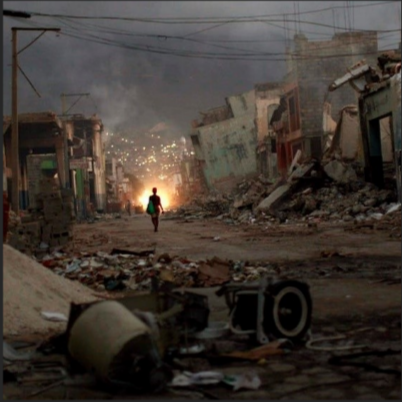

EAR - Emergency Aid Responders
We keep our E.A.R.s on the ground
Why E.A.R.?

Why E.A.R.?
These supplies will help survivors in the aftermath of the earthquake by providing them with essential medical supplies, personal hygiene items, warmth and comfort during the night, and tools for survival. The hand-crank flashlight is particularly useful, as it does not require batteries and can be recharged by hand. The Honeywell anti-dust masks will also help prevent respiratory illnesses caused by harmful debris in the air. The inclusion of Pampers Baby Dry Diapers and Super Econo Pack SUPER PLUS Small Shaped Pads will also help women and families with infants manage their personal hygiene needs during this difficult time.
Show your love to a dear person. Send them a virtual card to let them know that you have made a donation to their preferred charitable organization. Or send them a charity gift card (you choose the value of the card) and let that person make a donation to the organization of their choice.

We have considered the fact that not everyone may have a need for diapers or tampons in the box. However, the individuals who receive these extra essentials could choose to donate them to families or community centers in need. Alternatively, the extra tampons could be repurposed for other uses, such as wound care or as a fire starter. A note will be included with the supplies, explaining their intended use and providing suggestions for repurposing or donating any excess items. This can encourage the recipients to think creatively about how to use the items and help to build a sense of community and solidarity in the aftermath.